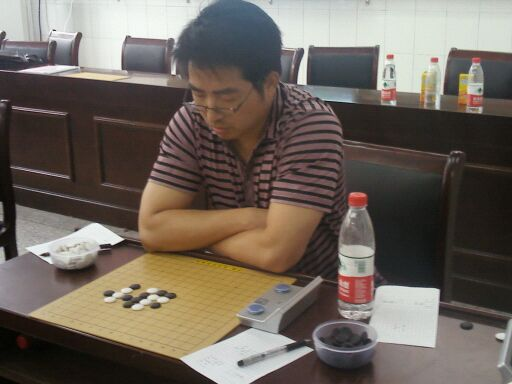
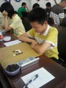

2011年南通市五子棋锦标赛
首页
五子棋新闻
#1 2011年南通市五子棋锦标赛 作者：有志青年 发表时间：2011-7-16 18:05:46

老蔡

小马哥
［ 掌棋宣传员 于 2011-7-16 18:18:36 时花20金币送鲜花一朵］
#2 Re:2011年南通市五子棋锦标赛 作者：蓝天蓝 发表时间：2011-8-12 22:58:54
沉思中
#3 Re:2011年南通市五子棋锦标赛 作者：小丸.net 发表时间：2011-8-12 23:01:44
老蔡是南通的第一高手，湖北籍贯。。。。估计明天有人要杯具。